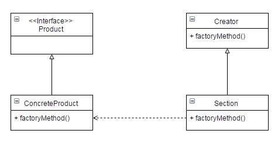

Posted on JUN 02, 2015 at 11:30 PM
● 目地 : 創造一個「建立物件」的界面，讓使用者直接向他拿取實體(的介面)
● 使用時機 : 可能誕生同種介面但不同型態時
● 想法 : 透過一個統一個「建立物件」的界面獲取實體物件，並把實體的交由次類別誕生。外界只需要一個Factory介面獲取一個結果(的介面)
● UML :
● 程式與解說 :
在Factory Method Pattern的前身其實有個Simple Facoty Pattern，他其實不太算個Pattern，比較算個編寫習怪。而後衍伸出Factory Method Pattern的。
Simple Facoty Pattern的想法是，將同性質需要判斷的部分抽成一個class，使外部不需要複雜的邏輯。
public class CupFactory {
public static Cup createCup(String type) {
Cup cup = null;
if (StringUtils.equals("coffee", type)) {
cup = new CoffeeCup();
} else if (StringUtils.equals("mug", type)) {
cup = new Mug();
}
return cup;
}
}
而Client要使用時，只需向factory拿取結果即可
public class Client {
public static void main(String[] args) {
Cup cup = CupFactory.createCup("mug");
cup.fill();
cup.drink();
}
}
從上面程式可以看出一個致命的缺點：如果要多新增杯子，我們就一直要修改CupFactory的內容。這樣就違反了SOLD的原則。
因此有了Factory Method Pattern。他的做法就是「一個實體杯子就對應到一個實體的工廠」，同時杯子有共同的介面，實體工廠也有共同的介面。因此會變成如下：
public interface CupFactory {
public Cup createCup();
}
public class CoffeeCupFactory implements CupFactory {
@Override
public Cup createCup() {
return new CoffeeCup();
}
}
public class MugFactory implements CupFactory {
@Override
public Cup createCup() {
return new Mug();
}
}
最終在使用上Client根本不需要是哪個實體的Factory或哪個實體的Cup，只要拿Factory來createCup即可。(這邊方便顯示，Client還是使用new，但應該是由外部給予一個factory的介面，Client不需要知道實體)
public class Client {
public static void main(String[] args) {
CupFactory coffeeCupFactory = new CoffeeCupFactory();
Cup cup = coffeeCupFactory.createCup();
cup.fill();
cup.drink();
}
}